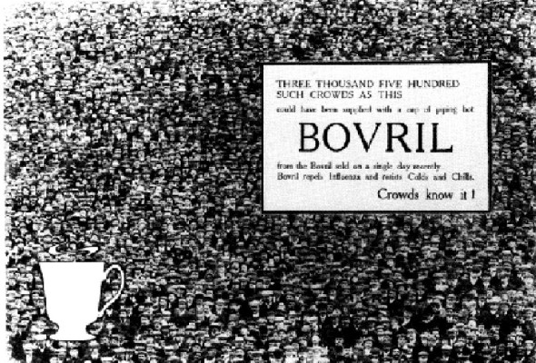

Introduction: Re-entering the Era of Crowds
The crowd, crowds and crowding were central to the way people experienced the modern world. By 1900, there were twelve cities with more than a million inhabitants. The population of Paris had topped 4 million by 1890, more than half of whom were crammed into the historic heart of the city.1 New York’s population was approaching 4 million by the 1900s, having increased almost fivefold in the 50 years leading up to 1904.2 London—the city helped shape the texts of Lewis and Pound that I’ll be focussing on in the following chapters—had 5.6 million inhabitants by 1890, rising to 6.5 million by 1900.3 This sheer force of numbers, with urban populations growing by almost 100,000 a year, had utterly to transform the ways people experienced the great cities, the ways they interacted with one another, and the ways that they saw themselves. This thesis considers how this new crowd culture, this immersion in massed humanity, influenced the ways that people made art? And what could the art they made tell us about the people of the crowd?
In 1900, no word existed that could describe the massive celebrations exploding onto the streets of England’s towns and cities on the day Mafeking was relieved—so they mafficked.
Other crowds were driven by more sinister forces than the flag-waving spirit. They were brought together, some said, by telepathy, or through mass-hypnosis; they were hysterical; they suffered collective hallucinations:4 when the Bermondsey women took to the streets in 1911, a mysterious fat woman, whom no-one had actually seen, was rumoured to have triggered the strike. Such phenomena had become a threat to the stability of the nation: in 1911 alone, almost a million workers had been involved in the strikes and demonstrations; next year there would be more.5

When the crowd wasn’t striking, it was spending. Thousands of women besiege the West,
announced the Daily Express in the Spring of 1909—not referring (this time) to a suffragette blockade, but to the opening of Selfridge’s in the West End.6 While the headline-writers drew on the suffragettes’ radical reputation, advertisers exploited the Trade Unions’ notoriety: a 1907 advert features a mass of cloth-capped workers, agitating in favour of Bovril beef tea (plate 1). These, and similar mass-media images were suspected of conducting the energies which drew the crowds together. In 1915, the eminent art-historian turned crowd-psychologist, William Martin Conway (whose interpretation of the crowd we shall return to later in this introduction) picked up the theme: Printing, the telegraph, and the various modern developments and inventions which we are all familiar with, have made crowd-formation possible without personal contact.
7
These new phenomena, as we’ll see, held a fascination for many writers and commentators. But for the modernists Ezra Pound and Wyndham Lewis, striving to make it new
the crowd was a contradiction: it offered a vision of a new populist culture that was at at odds with their cultural manifesto, but also a jolt, a shock, a model of the world transformed into something new. It is this contradictory relationship between Pound and Lewis and the crowd that the following pages seek to explore.
theorising the crowd
The crowd
was, by the turn of the century, one of the more theoretically developed ways for conceptualising social groups; and from a scientific viewpoint, it was by far the most developed. Crowd theory had a currency and an influence far beyond it’s immediate source in continental psychology and neurology, which accounts for its fruitfulness as an entry-point to some of the darker areas of twentieth-century culture.
By far the best known of the crowd-theorists was Gustave Le Bon, whose Psychologie des foules, written in 1895, was immediately translated into fifteen foreign languages (and into English as The Crowd: a study of the popular mind), has never been out of print, and is, according to Le Bon’s most sensitive contemporary commentator, certainly one of the best-selling scientific books of all time
.8 An additional notoriety has accrued to the work today, given its reputation as a favourite of fascist dictators: Mussolini stated that, I have read all the work of Gustave Le Bon, and I don’t know how many times I have re-read his Psychologie des foules. It is a capital work to which, to this day, I frequently refer.
9
Le Bon’s writing was a late intervention in a lively and wide-ranging debate that had been going on in the science of the mind since the 1870s, when a major reorientation in psychiatry (a shift from the belief of Esquirol’s generation that the causes of insanity were moral
, lying in the passion of the soul, to the organic
model of Magnan and Charcot, which focussed on the neurological and physical degenerative causes of insanity)10 coincided with the emergence of a positivist criminology that had interested itself in the misdemeanours of mobs.11
At the centre of Le Bon’s thought were two ideas: firstly, the law of the mental unity of crowds
, which stated that people in a crowd combine to form a new body possessing properties quite different from those of the bodies that have formed it
, so that crowds are in possession of a sort of collective mind
.12 Secondly, Le Bon contributed a physiological explanation for this remarkable phenomena: because people find themselves in an anonymous situation in the crowd, their conscious brain now gives up on keeping lower, more primitive brain functions in check; hypnotic contagion intervenes; and crowd members, having entirely lost their conscious personalities, become suggestible. So, crowds will tend to obey their lower brain functions, and are easily influenced by suggestion.13
For our purposes—for the investigation of modernist aesthetic forms—it is perhaps helpful to relate these two ideas to two key themes that have a bearing on how a writer or an artist might approach the crowd.
Firstly, the idea that they are both one and many, a single being in which many individuals have been subsumed, gives crowds a strange formal quality pregnant with suggestion. In chapter 2, we’ll look at Lewis’s representation of the crowd as giant, an idea that many modernists have toyed with—consider H.C.E.’s existence half-way between collective representation (Here Comes Everybody) and more-or-less recognisable individual (Humphrey Chimpden Earwicker) in Finnegans Wake, or consider The Delineaments of the Giants
section from William Carlos Williams’ Paterson, with its (admittedly hastily dropped) figuration of Paterson, only one man—like a city
.14 The idea is older than Le Bon, owing a lot to the traditional idea of the body politic, but Le Bon’s Crowd gave it a new status: it became biological fact, which, as we see in chapter 3, implies a new way of examining the collective.
The second of Le Bon’s key ideas, the theory that members of a crowd lose their conscious personalities and fall under the control of a primitive lower-brain function can be related to the pervasive interest in the primitive: the crowd is important as it can be seen as a locus for the re-emergence of the primitive right in the heart of ultramodern spaces like London.
The preoccupation with the so-called primitive mind is as much a feature of late nineteenth- and early twentieth-century psychology as it is of modernist art.15 The theory of evolution had, for an earlier generation, seemed to have given the biological sciences a claim to the throne previously claimed by theology as chief explainer of how we came to be here. It may have seemed reasonable, therefore, especially given the promising experimental evidence being produced by the developing fields of reflexology and hypnosis, that further investigation of our evolutionary origins might have helped explain human behaviour.16
Le Bon’s foremost British followers, Wilfred Trotter and William McDougall kept Crowd psychology on the agenda of the high-brow reviews well into the post-WWI period. From around 1908, when McDougal published An Introduction to Social Psychology and Trotter published his article, Herd Instinct and Its Bearing on the Psychology of Civilized Man
, both psychologists were interested in enumerating the finite set of instincts that underpin all human behaviour. Trotter’s list was much narrower than McDougall’s: sex, self-preservation and nutrition, Trotter argued, can account for most of the lesser
drives that McDougall puts forward.
But Trotter added a fourth instinct: gregariousness. In this drive, he argued, we may find the unknown
17 The gregarious instinct, Trotter claimed, works through a process of inherited mutual suggestibility: people have an innate tendency to fall under the spell of their peers, imitating their behavior. Trotter was drawing strongly on the work of Boris Sidis, the Russian emigré psychologist, who saw hypnotic suggestion as the prime factor influencing a crowd’s behaviour:x
which might account for the complexity of human behaviour.
Susceptibility is the cement of the herd, the very soul of the primitive social group…[This suggestibility] consists in the impressing on the mind of an idea, image, movement, which the person reproduces voluntarily or involuntarily. Suggestibility, then, is natural to man as a social animal. Under certain conditions this suggestibility, which is always present in man, may increase to an extraordinary degree, and the result is a stampede, a mob, an epidemic.18
Trotter takes this principle even further: suggestibility doesn’t just come into play in extreme situations like a stampede, a mob or an epidemic: it is the very organising principle of social life.19 In doing so he is merely giving a proper biological explanation to an idea long established in English political thought. In his essay from the 1870s, Physics and Politics
, Walter Bagehot had written that unconscious imitation is the principle force in the making of national characters.
We may not think that this imitation is voluntary or even conscious. On the contrary, it has its seat mainly in the very obscure parts of the mind whose notions, far from having been consciously produced are hardly felt to exist. 20
Pound’s and Lewis’s interest in tapping into this primitive part of the mind will be made clearer in the following chapters. But these ideas, as we have seen, pre-date the modernist interest in rediscovering the primitive. In the next section, we’ll look back to earlier models of the crowd, and examine what made the modern view unique.
the sovereign masses
While the scope of this thesis is limited to the first thirty-odd years of the twentieth century, I was not unaware of the glamour that accrued to crowds during the period inaugurated by the French Revolution21—a glamour which certainly lasted until the defeat in Russia of the modern era’s other landmark revolution, and which isn’t yet entirely exhausted.
In the century preceding my study, there was a sense that the crowd had emerged from passive reflection of the ancient regime’s model of order, and had taken on an active role as primary agent in the remaking of the world. Into the eighteenth century, social thought was still coloured by the theological politics outlined in Kantorowicz’s classic study, The King’s Two Bodies, where the body politic was an extension of the king’s person; not only a body himself, he was represented also as head and living sign of the collective body.22
Whether we choose to characterise the epoch following the French Revolution (as Burke did) as an age of sophisters, oeconomists and calculators
,23 or as an age of rapid technological progress and economic development, the world that emerged was interpreted by critics and thinkers less in the light of the will of kings and authority, and more as contingent on the ways people relate to one another socially. As the nineteenth century progressed, increasingly large demographic groups, from increasingly far down the economic scale—British examples include the Anti-Corn Law League, the Chartists, the Trade Union movement—seemed to hold the key to how events would be shaped. Masses, crowds, riots, big groups of common people, were big news—the most likely agents of change, it seemed in a rapidly changing world. So Marx, in The German Ideology, described the communist materialist who perceives, in a crowd of scrofulous, overworked and consumptive starvelings
, the necessity, and at the same time the condition, of a transformation of both industry and of the social structure
.24
By bringing in Marx here, I think we can skip to the crux of what I’m trying to say: that crowds or masses of consumptive starvelings or proletarians or whatever you want to call them came to take a central, indeed an almost messianic role in intellectual history. Marx’s prophesy of a class that would stand for the whole of society, and whose emancipation would encompass the revolution of a people
25 seems, as time has passed, to have inhered to concepts like the mass, the crowd, the street assembly. What Marx called the proletariat was seen as consubstantial with the dissolution of the existing world order
; the proletariat itself is the actual dissolution of that order
.26 And this is what I mean by the glamour of crowds: they have a stake in a projected revolution that goes far beyond what many people thought of crowds as normally doing (tearing up railings, for example, or smashing windows).27 The revolution’s goals would become identical to the goals of philosophy, the abolition and transcendence of the revolutionary masses’ historic bonds would become identical to the abolition and transcendence of the problems of philosophy.28
Neither crowds, nor masses, nor the international workers’ movement, have brought about an end to alienation or any of the other problems of critical philosophy. Nevertheless, this notion that there was a possibility they may have done so has left a legacy, evident in, for example, our deep interest in whether or not Habermas’s philosophy exhibits a fear of the masses
;29 or Derrida’s countering of Marx and Engels’s spectre of communism
with his own plurality of spectres
:
Why this plural? Would there be more than one of them? Plus d’un…: this can mean a crowd, if not masses, the horde, or society, or else some population of ghosts…some community without a leader—but also the less than one of pure and simple dispersion.30
Even in its late, spectral form, then, the glamour of crowds, masses, the horde, continues to haunt modern thought. It was my assumption that this glamour would push the crowd
to the centre of writers’ attempts to give the world literary form.
I was not alone in this assumption. John Plotz, for example, has looked at texts from the first half of the nineteenth century to ascertain the effects of these new crowds, riots, and demonstrations on the period’s literature
.31 Mary Esteve, in a study of American crowd-writing from the Antebellum to the Great Depression, has set out to track the implications of this emerging imagination of the crowd as a ubiquitous, culturally saturating phenomenon for the era’s concomitantly evolving political and aesthetic commitments.
32
One of the things that interests me about these two recent studies is that they both tend to shift from specific literary-historic manifestations of the crowd
to a contemporary discursive model of the public sphere
. So Plotz argues that
between 1800 and 1850 there coexisted a huge variety of ways to talk about a crowd, its nature, its extent, its aims, and its actions. Accounting for that variety demands a model of public speech and action capable of showing how various discourses might interact to shape a public sphere within which such phenomena as crowds could be argued over. Constructing such an account seems to me impossible without reference to that hoary bogeyman, the
public sphere.33
His contention, convincingly argued, is that nineteenth-century authors writing about crowds were intervening in a hotly-contested debate about what kinds of acts constituted public speech within in an emerging democracy, and that they put forward their own models of how crowds might be incorporated into a public discursive realm.34
So Plotz’s illuminating insights into nineteenth-century crowd-writing are framed within a wider argument whose focus is not on the specific literary crowd, but on the wider public sphere in which a writer’s interventions were situated. In general, Plotz examines texts as an author’s microcosmic model of what the public sphere ought to look like; in Harrington, for example, Maria Edgeworth puts forward a claim that she has found a way to incorporate an attractively attenuated version of [the crowd’s] spirit into the novel itself.
35
Mary Esteve, on the other hand, creates an opposition between the illiberal crowd mind and the liberal public square
as two distinct modes of collectivity—the crowd belongs to an aesthetic sphere, linked with notions of the sublime, while the public belongs to a political sphere, linked with notions of the rational.36 For Esteve, the uses American writers made of the crowd are linked to the changing fortunes of the public sphere in American political life: Whitman implicated crowds in his attempt to create a radical democracy; Henry James implicated them in his dramatisation of the fall of the public sphere.37
All of this is very enlightening, and I don’t want to suggest that theories about crowds can even begin to fill the vital role that Habermas’s notion of the public sphere plays in furthering our understanding of the role of philosophy in a continuing project of Enlightenment. When I come to deal with modernist texts by Lewis, Eliot, Pound and others, though, I do want to retain the sense that things could have been different, because I think that is the sense in which these texts are meant to be taken. I find it interesting that, at the moment that they want to make sense of past literary manifestations of the crowd, the way that Plotz and Esteve choose to proceed is by pitting crowd-representations against the very model of collective action that has emerged triumphant in today’s bourgeois-capitalist society and finding it wanting.
After Habermas, the burden of forwarding the Enlightenment project, which Marx placed on the shoulders of the proletariat, are carried by a notion of the public sphere. The task of philosophy of course, has shifted away from that aufhebung of which Marx wrote in his early articles;38 there is nothing in the theory of communicative action that retains the negative sense of Marx’s aufhebung, the sense of abolition and annulment. But when I say that I miss this sense, it isn’t because I want to ally myself with the young Marx; it is rather because I’m interested in an avant-garde art that was itself obsessed with this negative sense of aufhebung—an avant-garde art that imagined the abolition and transcendence of art itself.
And that’s why I think that if one is interested in the imagination, then the crowd can sometimes be of more interest than the public sphere. Because, as we’ll see, the crowd is all about radical breaks with the quotidian, about stepping outside of the Enlightenment, and entering a notional space of primordial irrationality. In the next few pages, I want to look at how people have conceptualised the crowd, and explain why I think it is a useful notion for understanding modernist writing.
crowd versus mass
As well as Le Bon’s scientific notions, sociological accounts of the human experience of crowds were beginning to emerge. For Georg Simmel, crowding and numerousness were important in accounting for the peculiar mental conditions of metropolitan man. Kurt Wolff’s translation of the relevant passage reads rather awkwardly:
…
the reciprocal reserve and indifference and the intellectual life conditions of large circles are never felt more strongly by the individual in their impact on his independence than in the thickest crowd of the big city. This is because the bodily proximity and narrowness of space makes the mental distance only the more visible.39
And there were numerous journalistic accounts of the new crowds, wonderstruck descriptions, being published in belletristic books about London and the great cities:
London Bridge! It is the climax, the apotheosis, as it were, of all thus far seen. So crowded is the canvas, so full of movement, if dazes one. Life sweeps over the bridge like the rush of the sea by the sides of a ship—always Citywards. In thousands they advance, leaning forward, with long, quick strides, eager to be there! Swiftly they flash past, and still they come and come, like the silent, shadowy legions of a dream. Somehow they suggest the dogged march of an army in retreat, with its rallying point far ahead, and the enemy’s cavalry pressing on its rear. Looking down upon the swarming masses, with the dark sullen river for a background, they fuse into one monstrous organism, their progress merges in the rhythmic swaying of one mammoth breathing thing. Stand in the midst of the mighty current of men! A wearied, languorous feeling creeps over you, as face follows face and eyes in thousands swim by. It is the hypnotic influence of the measureless, the unfathomable, the you-know-not-what of mystery and elusiveness in life, stealing your senses away.40
In these accounts, of course, we are already touching on one of the key issues in the history of aesthetic theory. Crowds had been complicit in the theory of the sublime since its first great reign over English literary thought in the eighteenth century. So Burke had written:
The noise of vast cataracts, raging storms, thunder, or artillery, awakes a great and awful sensation in the mind, though we can observe no nicety or artifice in those sorts of music. The shouting of multitudes has a similar effect; and, by the sole strength of the sound, so amazes and confounds the imagination, that, in this staggering and hurry of the mind, the best-established tempers can scarcely forbear being borne down, and joining in the common cry, and common resolution of the crowd.41
With a return to art predicated on shock, on sheer force of wonder, so strong that it provoked physical excitement, the crowd was bound to feature prominently, particularly given that it was so politically prominent. In his foundational manifesto of the classical avant-garde, Marinetti set out his intention to sing the great masses shaken with work, pleasure, or rebellion
; and the machines the futurists glorified seemed to applaud like a delirious crowd
.42 The new spirit in poetry foreseen by Apollinaire, too, would be shaped by crowds; it would shadow the speed and simplicity with which we’ve all become used to referring by a single word to such complex entities as a crowd.
43 Tristan Tzara envisaged an artistic revolution effected through a radical union of artists and masses: the wisdom of crowds…joined with the occasional madness of a few delicious beings
.44
For Walter Benjamin, the crowd had shaped and transformed the faculty of vision itself; modern art evolved to keep pace with the evolving human eye:
The daily sight of a lively crowd may once have constituted a spectacle to which one’s eyes had to adapt first. On the basis of this supposition, one may assume that once the eyes had mastered this task, they welcomed opportunities to test their newly acquired faculties. This would mean that the technique of Impressionist painting, whereby the picture is garnered in a riot of dabs of colour, would be a reflection of experiences with which the eyes of a big-city dweller have become familiar.45
opening the field
What is there between these aesthetic and literary representations of the crowd, and the concrete, enormous presence of classical
, LeBonite crowd theory in the social-scientific discourse of the early twentieth century?
Before we can begin to answer such a large question, I think we must be blunt, and spend a brief moment sidestepping questions which have been central to studies of the crowd and literature. Bringing these indistinct Anglo-American literary crowds into sharper focus will necessitate a shift of the gaze away from classical crowd theory—it will perhaps, in fact, entail that we dispense with the notion that the crowd in modern literary history came out of any historical crowds, or any historical crowd theories at all. Certainly I don’t think it’s appropriate, in understanding the literary use of the crowd, to have to focus on whether these crowd theories were true
or not, and to adjudicate the modernist works on whether they succeed or fail in offering a rigorous model of mass social phenomena.
But to sidestep questions of crowd psychology it is not necessary to downgrade its place in an account of the development of Anglo-American modernism: to sidestep, rather, is to imply that the aesthetic and scientific ways of representing crowds exist side by side, occupying parallel spaces and moving toward different ends. For the remainder of this introduction, I’ll be sketching out a larger frame, which I hope can contain both the crowd science
of the political journals, and the crowd aesthetic
of the literary journals, while preserving the autonomy and complexity of the literary crowds—their strange, flickering present-absence. Lewis planned a book called The Crowd Master; he never completed it (see chapters 2 and 3).
To accommodate this wider frame, though, it will be necessary to foreshorten our field of study. I shall leave any further detailed consideration of a European (chiefly French) theoretical background out of the following introduction, and try instead to reconstruct an insular English history of the ways that crowds have been understood. As numerous writers on the crowd have shown, much of the intense technical theorisation of crowd mind and behaviour grew out of debates within French scientific and political traditions; if we scrutinise them too deeply, we will be drawn into the politics of the Sorbonne and Third-Republic France and away from the politics of The Waste Land and Blast-era England. Instead, I set out a frame drawing on English crowd-history and crowd-psychology.
This is not merely bigotry and narrow-mindedness on my part; on the contrary, by remembering it, we are indirectly criticising the very real insularity and bigotry that has long characterised English thought—the reality which a utopian discipline like intellectual history (paying little attention to the borders of intellectual geography, passport controls hindering the free flow of books and persons) too often obscures.
Consider, for example, the reception of Modern French poetry in Edwardian England. In any account, the discovery
of symbolist poetry by poets of Pound’s generation is central to the move towards experimentation, away from traditional verse forms.46 When Pound, Aldington and HD inaugurated their avantgarde movement, they chose a French-sounding name (les Imagistes).47 But as Flint himself was later to complain,48 the imagistes’ version of what the French avangarde movements looked like was a mistranslation. Pound and Ford would argue about whether Imagisme was a French-style movement or a German-style movement—Pound never sympathised with Ford’s own mistranslations of a German poetic modernity, writing that he invents a class of German lyricists, and endows them with qualities more easy to find among the French writers. He supposes a whole tribe of Heines, but no matter.
49
Something similar, then, holds good with French and German crowd theory. To take the most celebrated misprison, when James Strachey translated Freud’s Massenpsychologie (Freud consistently uses this emotive and unmistakable term, mass, whose English translation means much the same as the German original) as Group Psychology. The whole sense of the work is changed, as primordial massness cedes to the more civilised, normative
abstract, the group
.50
Another example—imagine how different the English reader’s view of Le Bon himself must have been, coming across his Maxims and Sayings
in the New Age,51 compared to, say, a French reader who had access to the original of his Psychology of Socialism, or a less specialist reader with a vague awareness of The Crowd. Le Bon’s biographer, Robert Nye, has chided Susanna Barrows for not discussing his later writing, but he admits that Le Bon’s psychologie des foules of 1895 was the only text of crowd psychology to outlast the heroic period of the fin de siècle and figure as a cornerstone in the huge literature on twentieth-century mass psychology.
52
An English common
reader alert to psychology may have been dimly aware of The Crowd, or at least of its influence in the work of a writer like Conway; she would be unlikely to know about the work that Nye is interested in. Another reader, coming across Le Bon’s maxims in the idiosyncratic socialist forum, the New Age, may have gone away with a completely different idea of the writer than a French conservative reading his critique of socialism.
In the course of this thesis, we’ll see several examples of the chinese-whispers versions of European thought that I’m talking about here. In the following chapters, I shall follow a path which allows us to trace the influences of theorists and poetic traditions, without making too many assumptions that ideas had always to be thoroughly digested by those who sought to make use of them. In the remaining few pages of this introduction, I want to briefly sketch out the kind of approach to crowds that, I think, we can safely take—an approach that will prevent us from being too heavy handed, and from bringing in too much of what we now know about continental crowd psychology.
spasmodic and rational theories of the crowd
E.P. Thompson’s 1971 essay, The Moral Economy of the English Crowd in the Eighteenth Century
, has, at first sight, little to do with our field of enquiry. It focussed on a very particular type of crowd action, one that had long-since ceased by the time any remotely modernist crowd-literatures were being written: the gathering of the poor in the eighteenth century to set the price
of grain; the movement of the crowd from the market-place outwards to the mills and thence…to farms, where stocks were inspected and the farmers ordered to send grain to market at a price dictated by the crowd
.53 (It was not about all kinds of crowd,
Thompson later commented, and a reader would have to be unusually thick-headed who supposed it so
).54
What interests me about this essay is the division that Thompson draws at the beginning between, on the one hand, a spasmodic view of popular history
, and on the other, the view that the crowd’s actions unfolded against some legitimising notion
of rational consensus.55 According to the first of these views, the crowd is seen to move unconsciously, in spasms, from the basest of physical motives—hunger—and to act in thoroughly irrational and counter-productive ways. On the other—that the crowds’ moral assumptions supposed definite, and passionately held, notions of the common weal
,56 it is a body of rational people, working collectively towards a clearly defined objective.
We could view this, I think, as a master opposition for schematising the ways that crowds (and, indeed, other versions of massed
humanity—electorates, speculators on dotcom stock, or Manchester United supporters) have historically been conceptualised. This is not a unique way of understanding crowd theory’s legacy: amongst those social psychologists to whom crowds are still an interesting category, the opposition of out-group
perspectives (that interpret crowd behaviour as instinctive, subconscious and irrational) with the crowd’s own in-group
perspective (the self-understanding of crowd members in terms of their own rational aims) has become an orthodox way of schematising the discipline’s failures. For over a century,
begins a study of British anti-road protests by two leading social psychologists of crowd identity, psychological analyses of crowds have stressed their irrationality and their destructiveness. In recent years, there have been a number of studies which argue by contrast that crowd action is socially meaningful
.57
Thompson, in any case, was interested in accounting for one of the major transitions in modern English history: the move from a moral economy
—upon which various controls, including crowd action were exerted to ensure the poor had grain in times of dearth—to a capitalist market economy. He schematised it as a shift from the eighteenth-century bread-nexus
, to the cash nexus which emerged through the industrial revolution
.58 Crowds had, at the beginning of the eighteenth century, guaranteed the functioning of the moral economy through punitive riots. By the century’s end, they were discredited, and a new capitalist economy was dominant.
I think this is useful, because there is a case, persuasively put by Perry Anderson, for placing Anglo-American modernism at another critical juncture in the historical process of economic development:
European modernism in the first years of this century thus flowered in the space between a still usable classical past, a still indeterminate technical present, and a still predictable political future. Or, put another way, it arose at the intersection between a semi-aristocratic ruling order, a semi-industrialised capitalist economy, and a semi-emergent, or –insurgent, labour movement. 59
The crowd, I want to end by suggesting, was, in this historical context, even more at issue. It became a way of imagining the insurgent labour movement, and an image of the alien world it could bring about; simultaneously, though, it could figure the world that had once belonged to the semi-aristocratic ruling order, the eighteenth-century world of traditional rule that Thompson discusses, and bring up memories of a traditional social order even in the heart of the city.
In the following chapters, we will explore some of these images of the crowd.
Peter Hall, Cities of Tomorrow, Updated edition (Oxford: Blackwell, 1996), p. 31.↩
Brian J Cudahy, Under the Sidewalks of New York: The Story of the Greatest Subway System in the World, 2nd revised edition (New York: Fordham University Press, 1995), p. 1.↩
Cities of Tomorrow, p. 31; Jerry White, London in the Twentieth Century (Harmondsworth: Viking, 2001), p. 4.↩
See William Macdougal, The Group Mind, Cambridge Psychological Library (Cambridge: Cambridge University Press, 1920), pp. 28–30; Le Bon, The Crowd, pp. 24–26.↩
George Dangerfield, The Strange Death of Liberal England (London: Constable., 1936), p. 254, p. 269, p. 296.↩
Quoted in Erika D. Rappaport, Shopping for Pleasure: Women in the Making of London’s West End (Princeton and Woodstock: Princeton University Press, 2001), p. 142.↩
Martin Conway, The Crowd in Peace and War (London: Longmans, Green and Co., 1915), p. 15. For more on Conway’s background, see Joan Evans, The Conways: A History of Three Generations (London: Museum Press, 1966)—Evans’ biography of the family is, unfortunately, unsympathetic towards William Martin.↩
Robert Nye,
Savage Crowds, Modernism and Modern Politics
, in Prehistories of the Future: The Primitivist project and the culture of Modernism (Stanford: Stanford University Press, 1995).↩Simonetta Falasca-Zamponi, Fascist Spectacle: The Aesthetics of Power in Mussolini’s Italy, (Berkeley, Los Angeles and London: University of California Press), p. 21.↩
See Robert A. Nye,
II. The crowd
, Isis 74:4 (1983), p. 570.↩Jaap van Ginneken, Crowds, Psychology and Politics, 1871–1899, Cambridge Studies in the History of Psychology (Cambridge: Cambridge University Press, 1992) p. 53; more generally, pp. 52–99 passim.↩
Gustave Le Bon, The Crowd: A study of the popular mind (1896; reprint, Atlanta: Cherokee, 1982), p. 6.↩
Gustave Le Bon, The Crowd, pp. 9–11.↩
James Joyce, Finnegans Wake (Harmondsworth: Penguin, 1992); William Carlos Williams, Paterson (Harmondsworth: Penguin, 1983), pp. 6–7. The giant theme is set up at the outset of book 1 as though it will be the defining trope of the whole sequence, but in several hundred pages, there is only one really strong image of the giant Paterson:
…the subtleties of his machinations / drawing their sustenance from the noise of the pouring river / animate a thousand automatons.
Indeed, much of the rest of the poem seems to refute the idea that the constituents of Paterson are water-mill–like automata.↩For the perspective on art, see William Rubin’s landmark catalogue for the 1984 Museum of Modern Art show:
Primitivism
in 20th Century Art: Affinity of the Tribal and the Modern (New York: Museum of Modern Art, 1984).↩See Jonathan Miller,
Crowds and Power
, International Review of Psycho-Analysis 10 (1983), pp. 253–5.↩William McDougall, An Introduction to Social Psychology (London: Methuen, 1908), Wilfred Trotter,
Herd Instinct and Its Bearing on the Psychology of Civilized Man
, Sociological Review 1 (1908): 227–248.↩Boris Sidis, The Psychology of suggestion: A research into the subconscious nature of man and society (New York: D. Appleton & Co., 1898), p. 310.↩
Wilfred Trotter, Instincts of the Herd in Peace and War (London: Unwins, 1922), p. 26.↩
Walter Bagehot, Physics and Politics (Boston: Beacon Press, 1956) p. 28, p. 68.↩
Even as it tried to look forward to the new mass era of the twentieth century, crowd psychology began by looking back to 1789. According to Jaap Van Ginneken, the volumes of Hippolyte Taine’s Les origines de la France contemporaine that explored the Revolution (published in 1878 and 1884) `
contributed decisively to the emergence of political psychology, political sociology and political science in general, and more in particular to the analysis of the functioning of revolutionary movements and totalitarian governments
. See Van Ginneken, Crowds, Psychology, and Politics, 1871-1899, Cambridge Studies in the History of Psychology (Cambridge: Cambridge University Press, 1992), pp. 43, 48–9.↩Ernst Kantorowicz, The King’s Two Bodies: A Study in Mediaeval Political Theology (Princeton: Princeton University Press, 1997), pp. 3–6.↩
Edmund Burke, Reflections on the Revolution in France (Harmondsworth: Penguin, 1986), p. 170.↩
Karl Marx, Early Political Writings, ed. Joseph O’Malley, Cambridge texts in the history of political thought (Cambridge: Cambridge University Press, 1994), p. 144.↩
See Marx,
A Contribution to the Critique of Hegel’s Philosophy of Right. Introduction
, p. 254.↩Karl Marx,
A Contribution to the Critique of Hegel’s Philosophy of Right. Introduction
, in Early Political Writings, pp. 256–257.↩See, for example, the famous diatribe against
doing as one likes
in Mathew Arnold, Culture and Anarchy and Other Writings ed. Stefan Collini, Cambridge Texts in the History of Political Thought (Cambridge: Cambridge University Press, 1993), p. 85; Charlotte Brontë, Shirley (Harmondsworth: Penguin, 1974), p. 168.↩Marx,
A Contribution to the Critique of Hegel’s Philosophy of Right. Introduction
, p. 257.↩Warren Montag,
The Pressure of the Street: Habermas
Fear of the Masses’, in Mike Hill and Warren Montag, eds., Masses, Classes, and the Public Sphere (London and New York: Verso, 2000): 132–45.↩Jacques Derrida, Specters of Marx: The State of the Debt, the Work of Mourning, and the New International, trans. Peggy Kamuf (New York and London: Routledge, 1994), p. 3.↩
John Plotz, The Crowd: British Literature and Public Politics (Berkeley, Los Angeles and London: University of California Press, 2000), p. 2.↩
Mary Esteve, The Aesthetics and Politics of the Crowd in American Literature (Cambridge: Cambridge University Press, 2003), p. 2.↩
Plotz, The Crowd, p. 9.↩
Plotz, The Crowd, p. 10–11.↩
Plotz, The Crowd, p. 11.↩
Esteve, The Aesthetics and Politics of the Crowd in American Literature, p. 21; pp. 15–19.↩
Esteve, The Aesthetics and Politics of the Crowd in American Literature, p. 29; p. 61.↩
For example Marx,
A Contribution to the Critique of Hegel’s Philosophy of Right. Introduction
, p. 257.↩Georg Simmel,
The Metropolis and Mental Life
, in The Sociology of Georg Simmel, trans. Kurt Wolff (New York: Free Press, 1950) p. 418.↩P. F. William Ryan,
Going to Business in London
, in Living London: Its Work and its Play; its Humour and its Pathos; its Sights and its Scenes, ed. George R. Simms (London: Cassell, 1903), quoted in David Kynaston, The City of London, vol.II, (London: Chatto & Windus, 1995), p. 241.↩Edmund Burke, A Philosophical Enquiry into the Origin of Our Ideas of the Sublime and the Beautiful, ed. Adam Phillips (Oxford: Oxford University Press, 1990, reissued 1998), pp. 75–6. See also David Hume, A Treatise of Human Nature, ed. P.H. Nidditch (New York: Oxford University Press, 1978), p. 373:
It is evident that any very bulky object, such as the ocean, an extended plain, a vast chain of mountains, a wide forest; or any very numerous collection of objects, such as an army, a fleet, a crowd, excite in the mind a sensible emotion; and that the admiration which arises on the appearance of such objects is one of the most lively pleasures which human nature is capable of enjoying.
↩F. T. Marinetti,
The Founding and Manifesto of Futurism
, trans. Lawrence Rainey, in Rainey, ed., Modernism: An Anthology (Oxford: Blackwells, 2005), p. 5. Originally published in Le Figaro, 20 February, 1909, but for an early English translation, see Poetry Review 8 (1912), p. 411.↩La rapidité et la simplicité avec lesquelles les esprits se sont accoutumés à désigner d’un seul mot êtres aussi complexes qu’une foule…
uvres en prose completes, ed Pierre Caizergues and Michel Decaudin, Bibliothèque de la Pléiade (Paris: Gallimard, 1991–3), ii, p. 945.↩Tristan Tzara, Approximate Man, and Other Writings (Detroit: Wayne State University Press, 1973), p. 215.↩
Charles Baudelaire: A lyric poet in the era of high capitalism (London: Verso, 1997), p. 130n44.↩
This argument is made, for example, in Willard Bohn, Apollinaire and the International Avant-Garde (Albany: SUNY Press, 1997), p. 20, and in Norman T. Gates’s annotations to Richard Aldington: An Autobiography in Letters, ed. Norman T. Gates (Philadelphia: Penn State Press, 1992), p. 15. For the most detailed exploration of the influence of French verse on Anglo-American modernism, see Cyrena N. Pondrom, The Road from Paris: French Influence on English Poetry, 1900–1920 (Cambridge: Cambridge University Press, 1974).↩
A concise account of the founding of Imagism is given in Michael Levenson, A Genealogy of Modernism: A Study of English Literary Doctrine 1908-1922 (Cambridge: Cambridge University Press, 1986), p. 69.↩
F. S. Flint,
History of Imagism
, Egoist 2 (1915): 70-71.↩Ezra Pound,
Ford Madox Hueffer
, The New Freewoman, 15 December, 1913, p. 251.↩See Bruno Bettelheim, Freud and Man’s Soul (New York: Knopf, 1983).↩
Gustave Le Bon,
Aphorisms on Politics, Law, and Faith
The New Age 11 (23 May, 1912): 83–84;Some Modern Aphorisms
The New Age 12 (13 March, 1913): 449.↩Robert A. Nye,
II. The crowd
, Isis 74:4 (1983), p. 571.↩E. P. Thompson, Customs in Common (New York: The Free Press, 1993), p. 228.↩
Customs in Common, p. 260.
The Moral Economy of the English Crowd in the Eighteenth Century
was first published in 1971, but Thompson added nearly 100 pages of comments dealing with subsequent criticism when it was republished in this collection.↩Customs in Common, p. 185, p. 188.↩
Customs in Common, p. 188.↩
John Drury and Steve Reicher,
Collective action and psychological change: The emergence of new social identities
, British Journal of Social Psychology 39 (2000), p.579.↩Customs in Common, p. 189.↩
Perry Anderson,
Modernity and Revolution
New Left Review 144 (1984), p. 105.↩